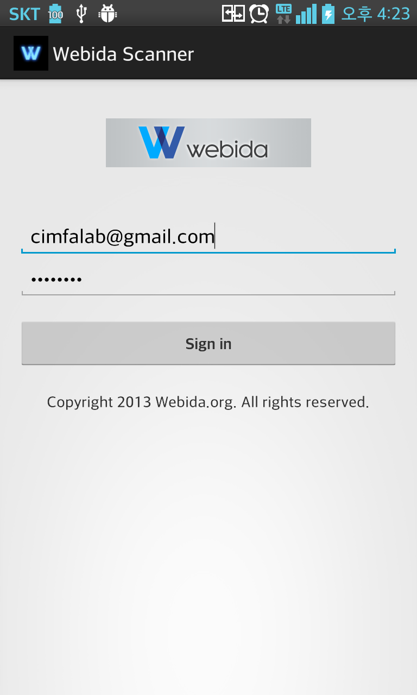
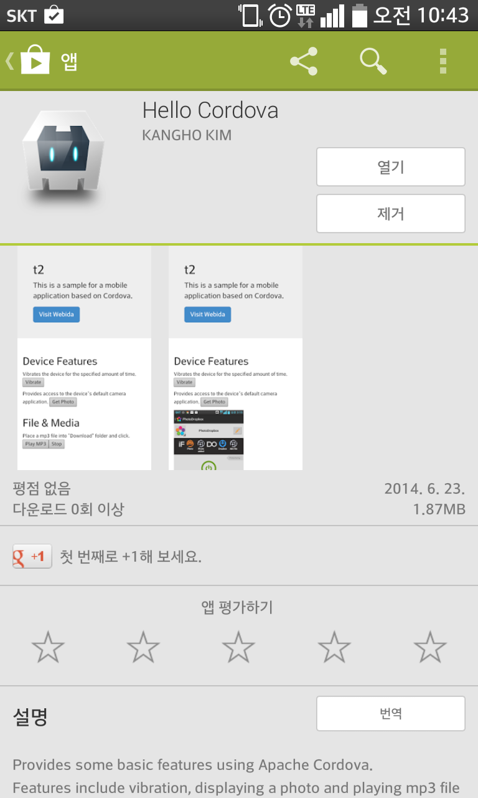
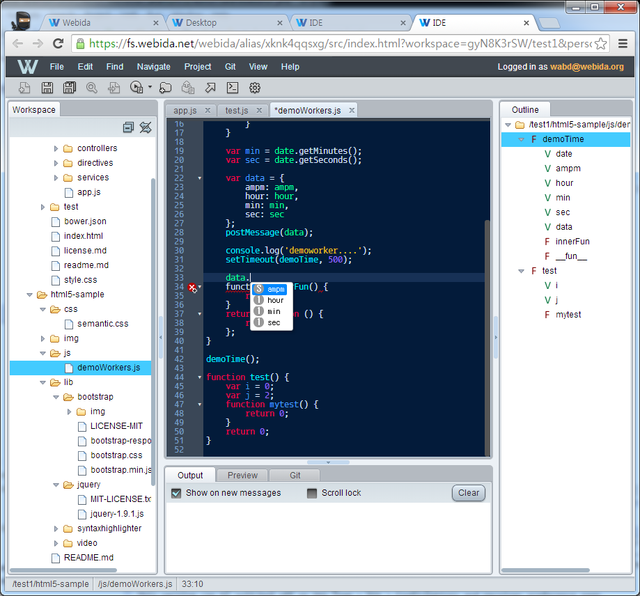
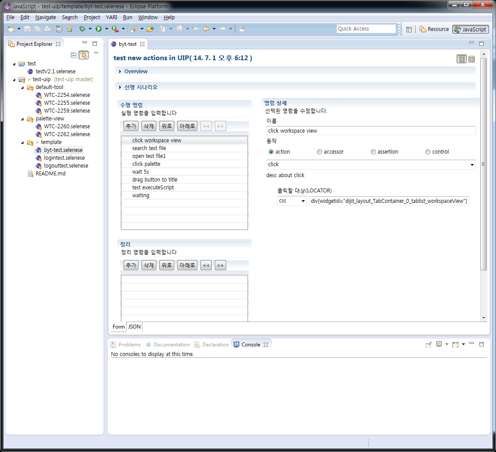

4.15 전사 조직 개편 중기 비전 수립 및 트렌드 변화 대응 선행기술 연구팀 신설 산하 조직으로 6개 기술영역으로 분류하여 셀(Cell) 신설 PSLab + Tizen 과제인원 → SDK 개발그룹 (Tizen SDK 과제) → WT 셀 (Webida 성장과제 인원 주축 + alpha)
3 Parts 16 Developers Architecture (강훈) 셀 운영, PM, 미래과제발굴 UI Builder (임창훈, 김윤형, 김주관, 김철기, 서경석, 변영택, 이윤석, 조현상) Server/IDE (김강호, 김대영, 김상진, 나현익, 박종걸, 심흥운, 조우영) [REMIND!] 여러분 모두가 1차 소속은 WT 셀입니다.
Tizen SDK Experience Web IDE, UI Builder Mobile Platform Webida working software Service Platform (Filesystem, Authorization) Web-based IDE for HTML5 App Dogfooding Spirit
Workbench, Project Management, Git Support Plugin System Mobile Support Supports Android by Cordova (w/ Companion App)  
Based on CodeMirror Content Assist Code Completion JavaScript Type Inference Jump to Definition Outline 
Filesystem Authorization and ACL Provides role-based access control Provides fine control for the resources (user, file, ...) Build Provides Android support with signing Online Simulator, WEINRE Debug Server Notification Based on WebSocket CORS Proxy
Authoring and runtime environment for automated web application test Based on Selenium WebDriver Provided as Eclipse plug-in Provides ready-made test actions like click, input, etc. 
Based on IDE and Server System Workbench Plugin System Server File Management (Filesystem server) User Management (Authorization and ACL server) Feedback and Collaboration (Notification server) Test Tool Automated UI Testing
Platforms to be supported (PoC) Tizen IoT iOS Supports UI Prototyper shipment Notification, Data store Test Tool Direct UI recording Weak link with other groups DIBS 3.0 Test, VM Web Shell, Live Reload